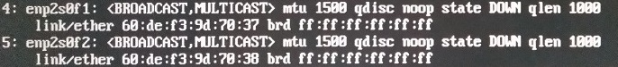
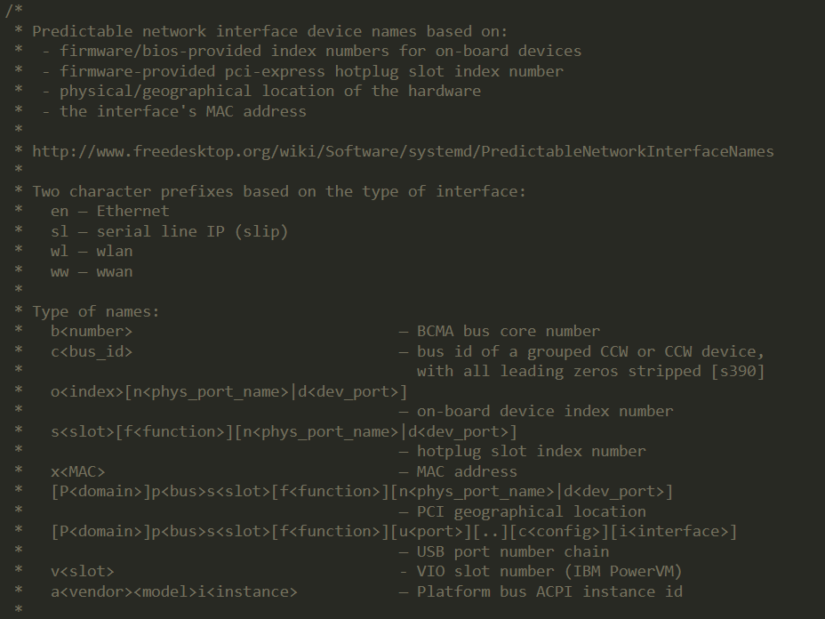
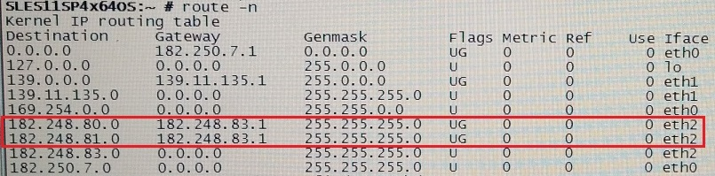

第十二章 管理网络
目标：
- 配置RHEL服务器上的网络接口和设置
章节：
- 描述网络概念
- 验证网络配置
- 从命令行配置网络
- 编辑网络配置文件
- 配置主机名与名称解析
第一节：描述网络概念
目标：
- 完成本节后，学生应该能描述服务器的网络寻址和路由的基本概念。
TCP/IP网络模型：
- TCP/IP网络模型包含4层（应用、传输、网络、链路），描述不同协议如何进行互操作，
以便计算机通过互联网将流量从一台计算机发送到另一台计算机。
* 注意：OSI七层模型与TCP/IP四层模型对比

- 应用层（Application Layer）：
1. 应用程序，常见应用包括SSH、HTTPS、NFS或CIFS、SMTP等。
- 传输层（Transport Layer）：
1. 常见的传输层协议包括TCP、UDP协议。
2. 常见的端口在/etc/services文件中可以找到常用和已注册的端口列表。
3. 数据包在网络上通过socket（IP+端口）进行传输，每个数据包具有一个源socket和目标socket。
4. 此信息可以在监控和过滤时使用。
- 网络层（Internet Layer）：
1. 网络将数据从源到目的传输
2. IPv4和IPv6是网络层协议，路由器在其间连接网络。
- 链路层（Link Layer）：
1. 提供物理连接，常见的网络类型包括有线以太网（802.3）和无线局域网（802.11）。
2. 每一物理设备具有一个硬件地址（MAC地址），用于标识局域网络段中数据包的目的地。
描述网络接口名称：
- 旧版红帽企业Linux中将eth0、eth1和eth2等名称用于各个网络接口。
- 当设备添加和移除，命名的机制可能会导致命名变化。
- 而且PCIe标准无法保证在启动时检测PCIe设备的顺序。
- RHEL 7起开始采用新的命名体系，基于固件信息、PCI总线拓扑和网络设备类型，而且不会更改。
- 开头为接口类型：以太网接口en、WLAN接口wl
- 紧接为固件信息或PCI设备位置信息：
1. oN：板载设备，例如 eno1 为板载以太网设备1，有时板载设备为 emN。
2. sN：PCI热插拔设备，例如 ens3 表示PCI热插拔插槽3中的以太网卡。
3. pMsN：
a. 位于插槽 N 中总线 M 上的PCI设备，例如 wlp4s0 表示插槽0中PCI总线4上的WLAN卡。
b. 如果该卡是⼀个多功能设备（可能是有多个端⼝的以太⽹卡，或是具有以太⽹外加其他⼀些
功能的设备），设备名称中就可能会添加 fN。
c. 如下所示：具有多个接口的万兆光纤以太网卡

* 注意：
1. systemd项目源码 src/udev/udev-builtin-net_id.c 定义相应的网络接口定义规范。

2. 自Fedora 15开始采用全新的网络接口命名方式，称为一致性网络设备命名法
（Consistent Network Device Naming，CNDN）。
3. RHEL 6中的网络接口管理方式：
a. RHEL 6中使用udev对网卡进行命名，使用/etc/udev/rules.d/70-persistent-net.rules。
b. 该文件由/lib/udev/write_net_rules在每次启动时读取，其中的内容类似如下：
SUBSYSTEM=="net", ACTION=="add", DRIVERS=="?*", ATTR{address}=="52:54:00:be:19:20",
ATTR{type}=="1", KERNEL=="eth*", NAME="eth0"
c. 也就是说无论kernel启动时检测到的网络接口顺序如何，udev都会按照该文件里MAC地址对应的
名字对网络接口进行命名。
d. 如果某块网卡被替换，那么在启动时/lib/udev/write_net_rules会更新该70-persistent-net.rules
文件，更新的方式并不是将该行里的MAC地址修改为新网卡的MAC地址，而是在该文件后面附上新的一行，
并生成一个新的网卡名字。
4. RHEL 7/8中的网络接口管理方式：
a. RHEL 7/8仍然采用udev的机制，udev被集成至systemd-udevd中，且不使用70-persistent-net.rules
文件，替换为 /lib/udev/rules.d/71-biosdevname.rules 文件。
b. systemd-udevd 调用 biosdevname（由biosdevname软件包提供），biosdevname 内部则调用 dmidecode
等BIOS工具来获取PCI号等BIOS信息，从而为网卡命名。
c. 过程如下：systemd-udevd --> 71-biosdevname.rules --> biosdevname --> dmidecode

5. 常用帮助文档与链接：
$ man biosdevname：获取设备的BIOS名称
$ man 7 udev：查看动态设备管理文档
理解系统网络设备命名方法
IPv4地址：
- IPv4地址是4段8位二进制数字（32位），分为网络位（network part）和主机位（host part），
该格式称为“点分十进制”。
- 不同子网可通过子网掩码进行区分，可使用形如255.255.255.0的语法表示，或使用无类别域间路由（CIDR）
表示法通过形如/24前缀表示。
- 同一子网的主机可以直接通信，不同子网的主机需要路由器通信。
- 网络管理员需要懂得子网划分，让子网拥有足够的IP地址，子网掩码用以确认子网划分。
- 特殊地址127.0.0.1指向localhost本地地址，网络127.0.0.0/8属于本地系统。
- IPv4地址与子网掩码示例：

* 注意：
1. IPv4子网掩码与网络位（网络地址）的计算：


2. 分别计算主机IPv4地址、子网掩码，再将两者进行与运算（0与1只取0）得到网络地址。
IPv4路由：
- 不管使用IPv4还是IPv6，网络流量都需要以主机到主机和网络到网络的形式进行传输。
- 每一主机都具有一个路由表，该表告诉主机如何路由特定网络的通信。
- 路由表（route table）查看示例：
1. 单路由示例

2. 多路由多网段示例：管理网段、NAS存储网段、生产网段。

IPv4地址与路由配置：
- 服务器可以在引导时从DHCP服务器自动配置其IPv4网络设置，并在租期到期前一直使用此地址。
- 若不使用DHCP服务器，可以将服务器配置为使用静态网络配置（static）。
IPv6网络：
- IPv6网络旨在最终取代IPv4网络。
- IPv6也可以在双栈模型（dual-stack model）中与IPv4并行使用。
- 在这种配置中，网络接口可以同时具有IPv6地址和IPv4地址，RHEL默认在双栈模式下运行。

IPv6地址：
- IPv6地址是一个128位数字（二进制），表示为八组以冒号分隔的四个十六进制半字节。
- 为了便于编写IPv6地址，不需要写出组中的前导零。
- 但每个冒号分隔组中必须至少写入一个数字。
- 一组或多组连续零可通过 :: 块来合并。
- 如果地址包含两个连续且长度相同的零组，则最好将每个组最左边的零组缩短为 ::，
最右边的组缩短为 :0: 。
- 十六进制数字使用小写字母 a 到 f。


IPv6子网划分：
- IPv6单播地址分为两部分：网络前缀、接口ID。
- 网络前缀标识子网。
- 同一子网上的任何两个子网接口都不能具有相同接口ID，接口ID可标识子网上的特定接口。
- IPv6几乎所有普通地址均使用/64子网掩码，几乎可以容纳任意数量主机。
- 网络提供商通常提供/48位前缀，保留16位用于本地子网，64位用于接口ID。

IPv6地址配置：
- IPv6地址支持DHCPv6、手动配置、无状态地址自动配置（SLAAC）。
- RHEL 8中的dhcp软件包和radvd软件包分别提供DHCPv6和SLAAC支持。
主机名与IP地址：
- Linux有多种机制可以将主机名映射到IP地址，统称为名称解析。
- 手动更新静态设置/etc/hosts实现名称解析。
- DNS动态获取由DHCP或/etc/resolve.conf中配置的DNS服务器来获取。
练习 P401：DESCRIBING NETWORKING CONCEPTS
第二节：验证网络配置
目标：
- 完成本节后，学生应该能使用命令行工具测试与检查当前的网络配置。
识别网络接口：
- $ ip link show：列出系统上所有的可用网络接口与MAC地址（link/ether字段）

显示IP地址：
- $ ip addr show <interface_name>：查看指定网络接口的IP地址
ip address show命令或ip a s命令与以上命令相同。


显示性能统计信息：
- $ ip -s link show <interface_name>：查看指定网络接口的性能

1. 命令输出字段说明：
a. RX（received）：网络接口接收的数据包
b. TX（Transmitted）：网络接口发送的数据包
c. 数据包错误数与丢包数
检查主机之间的连接：
- ping命令与ping6命令用于测试主机间的连接。
- ping6命令为ping命令的软链接，且与ping -6命令相同。
- 该命令默认持续运行，可使用Ctrl+C终止命令。


- ping本地链路地址和本地链路全节点多播组（ff02::1）时，必须使用作用域标识符
（如ff02::1%ens3）来显式指定要使用的网络接口。
- 如果遗漏，则将显示错误 connect: Invalid argument。
- 对ff02::1执行ping可能有助于找到本地网络上的其他IPv6节点。

- 可使用IPv6地址登录远程主机，如下所示：
$ ssh <remoteuser>@<remotehost_ipv6>%<local_interface_by_ipv6>

显示路由表：
- $ ip route show：查看系统路由表（推荐）
- $ route -n：查看系统路由表

* 注意：
1. iproute软件包提供：ip、ss。
2. net-tools软件包提供：ifconfig、route、netstat。
3. 查看IP地址也可使用ifconfig命令，查看系统路由表也可使用route命令。
4. 但net-tools软件包不再提供维护，将被淘汰使用，推荐使用iproute软件包提供的网络工具。
- $ ip -6 route show：查看系统IPv6路由表（忽略unreachable）

追踪流量采用的路由：
- 使用traceroute命令或tracepath命令追踪网络流量通过多个路由器到达远程主机的路径。
- 两者均使用UDP包追踪网络流量路径，但部分网络屏蔽UDP与ICMP流量。
- 默认traceroute命令不安装。
- traceroute命令可使用UDP包（默认）、ICMP（-I）与TCP包（-T）追踪流量路径。
- 每一行均为下一跳的路由器地址。


- tracepath6和traceroute -6命令等效于IPv6版本的tracepath和traceroute。

端口与服务故障排除：
- 使用ss或netstat显示网络连接信息，ss用以替换netstat。
- $ ss -ta：查看系统监听与建立的所有TCP套接字


练习 P411：VALIDATING NETWORK CONFIGURATION
第三节：从命令行配置网络
目标：
- 完成本节后，学生应该能使用nmcli命令管理网络设置与设备。
描述NetworkManager概念：
- RHEL 8中使用NetworkManager服务监控和管理网络。
- nmcli命令用于配置网络，配置保存在/etc/sysconfig/network-scripts目录中。
- 只有root用户才能修改网络配置。
- 其中device为网络接口、connection为针对device的网络配置集合。
- 针对任一device，同一时间只有一个connection处于活动状态。
- 每个connection具有一个名称或ID。
* 注意：
1. RHEL 7中可使用network或NetworkManager管理网络，但两者同时只能使用一种，否则冲突。
2. RHEL 8中全面使用NetworkManager，默认已不再使用也不安装network。
3. D-Bus为消息总线服务，用于实现进程间通信（IPC），NetworkManager使用D-Bus实现网络配置。
4. nmcli命令为NetworkMananger的命令行控制工具，必须启动NetworkManager才能使用。
5. D-Bus与Networkmanager为freedesktop.org的两个子项目。


查看联网信息：
- $ nmcli device status：查看系统上所有的网络接口设备状态

- $ nmcli connection show：查看系统上所有的网络连接（网络接口配置文件）状态
- $ nmcli connection show --active：查看系统上所有激活的网络连接

添加网络连接：
- 使用nmcli connection add命令添加网络连接。
1. 示例一：IP地址由DHCP自动获取

2. 示例二：IP地址手动设置

a. 该网络连接中IP地址依然将通过DHCP自动获取，需要将其关闭，如下所示：
$ nmcli connection modify <connection_name> ipv4.method manual
b. 该网络接口在系统启动过程中将自动启动，若未自动启动，即 ONBOOT=no，执行以下命令：
$ nmcli connection modify <connection_name> connection.autoconnect yes
- 以下使用静态IPv6和IPv4地址为eno2设备创建eno2连接，且使用IPv6地址和网络前缀
2001:db8:0:1::c000:207/64及默认IPv6网关2001:db8:0:1::1，以及IPv4地址和网络前缀
192.0.2.7/24及默认IPv4网关192.0.2.1，启动时自动连接。

控制网络连接：
- $ nmcli connection up <connection_name>：激活网络连接
- $ nmcli device disconnection <device_name>：断开与网络接口的连接并将其关闭
* 注意：
1. nmcli connection down <connection_name>命令并非是停用网络接口的最佳方法，因为它只关闭网络连接。
2. 但在默认情况下，大部分有线系统连接是在启用了autoconnect的情况下配置的。
3. 这将在其网络接口可用后立即激活连接。
4. 断开网络接口并将其关闭使用以上命令。
修改网络连接设置：
- $ nmcli connection show <connection_name>：查看网络连接的详细状态
- nmcli connection modify <connection_name>命令可用于更改连接的设置，并同步更新
/etc/sysconfig/network-scripts/ifcfg-<connection_name>文件。


- 如果某个连接之前通过DHCPv4服务器获取配置，设置ipv4.method从auto变为manual静态设置。
删除网络连接：
- $ nmcli connection delete <connection_name>：删除网络连接
- 删除网络连接后，将同时删除/etc/sysconfig/network-scripts/ifcfg-<connection_name>文件。
命令摘要：
- 常用nmcli命令示例：

* 注意：
$ man 5 nm-settings：查看NetworkManager配置的详细参数信息
$ man nmcli-examples：查看nmcli命令的使用示例
练习 P420：CONFIGURING NETWORKING FROM THE COMMAND LINE
第四节：编辑网络配置文件
目标：
- 完成本节后，学生应该能通过编辑配置文件修改网络配置。
描述连接配置文件：
- 默认情况下，通过nmcli connection modify <connection_name>命令进行的更改会
自动保存到/etc/sysconfig/network-scripts/ifcfg-<connection_name>中。
- 还可以手动编辑此文件，然后运行nmcli connection reload命令以便NetworkManager
读取配置更改。
- 出于向后兼容性（backward-compatibility）的原因，此文件中保存的指令具有不同于
nm-settings (5) 名称的名称和语法。
- 下表将部分关键设置名称映射到 ifcfg-* 指令：


修改网络连接：
- 可以通过直接编辑连接配置文件来配置网络。
- 连接配置文件控制单个网络设备的软件接口。
- 如下所示：/etc/sysconfig/network-scripts/ifcfg-eth1

- 修改完配置后，使用nmcli connection reload使NetworkManager读取更改的配置，
同时还需要将网络连接接口重启。
- 如下所示：
$ nmcli connection reload
$ nmcli connection down <connection_name>
$ nmcli connection up <connection_name>
* 注意：
1. 每台主机中只能有一个网络接口配置为默认路由，其网络连接文件中 DEFROUTE=yes，
即每个主机的路由表中只能具有一个默认路由！
2. 若主机中除默认路由，还需配置多网段路由，如下所示：

3. /etc/sysconfig/network-scripts/route-ethX：配置网络接口多网段路由
练习 P428：EDITING NETWORK CONFIGURATION FILES
第五节：配置主机名与名称解析
目标：
- 完成本节后，学生应该能配置服务器的静态主机名及名称解析，并测试其结果。
更改系统主机名：
- $ hostname：显示系统主机名或临时修改主机名
- 编辑/etc/hostname或使用hostnamectl命令可以永久修改主机名。


配置名称解析：
- /etc/nsswitch.conf文件定义域名查找位置和顺序，默认先检查/etc/hosts文件内容。
- 其次会查找/etc/resolv.conf文件中的DNS服务器，最多可以配置3台DNS服务器。


测试DNS名称解析：
- $ hostname <hostname>：测试与DNS服务器的连接性

- /etc/sysconfig/network-scripts/ifcfg-<connection_name>中设置的DNS会
更新/etc/resolv.conf中的DNS。
- PEERDNS参数是指BOOTPROTO=dhcp时，是否使用DHCP服务器指定的DNS地址，并更新/etc/resolv.conf。
* RHEL 8配置链路聚合：
- 使用teamd创建链路聚合，必须先加载team内核模块。

- 创建team逻辑网络接口、添加team-slave端口、启用team逻辑网络接口。

* RHEL 8创建与配置Linux bridge：
- 创建Linux bridge必须先加载bridge内核模块。
$ lsmod | grep bridge
- 创建过程如下所示：
$ nmcli connection add type bridge con-name br0 ifname br0 \
ipv4.addresses <ipaddress>/<prefix> ipv4.method manual \
ipv4.never-default yes bridge.stp no
# 创建Linux bridge及配置文件，并指定IPv4地址与子网掩码、禁用DHCP、禁用默认路由与禁用STP协议。
$ nmcli connection add type bridge-slave con-name br0-eth1 ifname eth1 master br0
# 添加Linux bridge br0的网卡接口eth1及配置文件
$ nmcli connection reload
# 重载NetworkManager网络配置文件
$ nmcli connection show --active
# 查看激活的网络连接

$ bridge link show | \
awk 'BEGIN{ print "Bridge\t\tInterfaces"} { sub(":","",$2); print $7"\t\t"$2 }'
# 查看已有的Linux bridge与其接口名称

练习 P436：CONFIGURING HOST NAMES AND NAME RESOLUTION
Lab P440：MANAGING NETWORKING